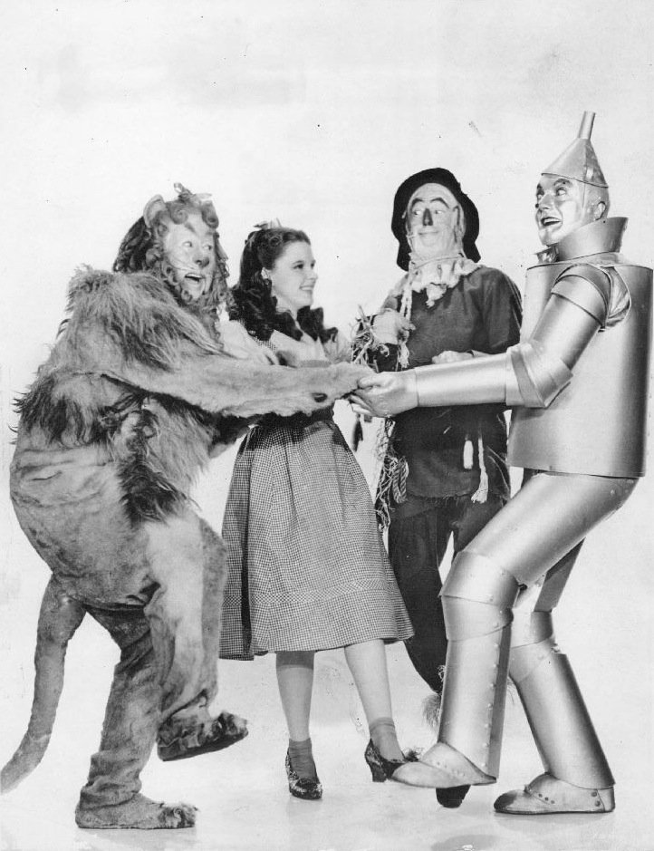

The Wizard of Oz, Publicity Photograph (Bert Lahr, Judy Garland, Ray Bolger and Jack Haley)
Victor Fleming · 1939 · Publicity still, black and white
In copyright. Look and learn: shown for study, not for download.
Ray Bolger was first cast as the Tin Man and Buddy Ebsen as the Scarecrow before they exchanged parts. Ten days into the shoot Ebsen had a toxic reaction to the aluminium dust in the Tin Man's make-up, and Jack Haley replaced him; Haley's make-up was quietly changed to an aluminium paste over a layer of clown white greasepaint. The Technicolor sequences took more than six months to shoot, from October 1938 to March 1939.